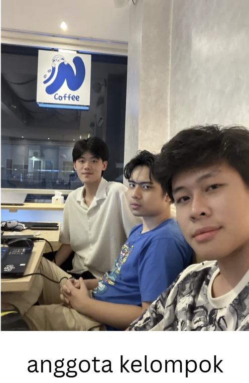
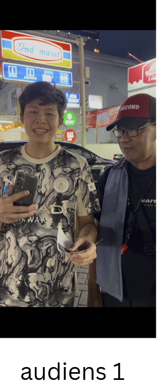
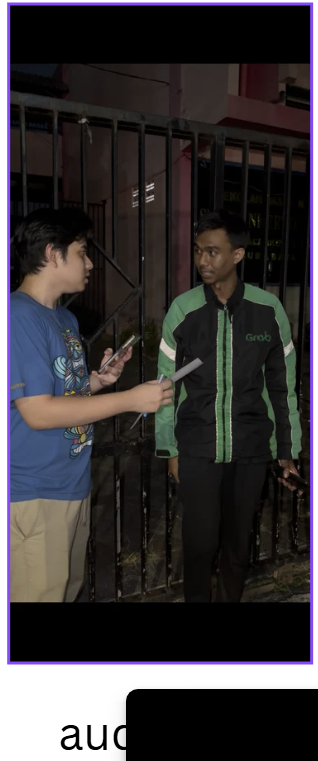
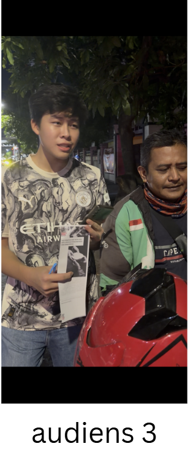
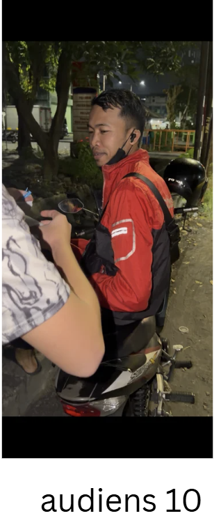
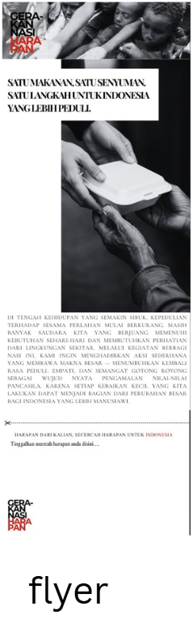

Karena kepedulian kecil dapat menjadi suara besar bagi Indonesia.
Kami membagikan nasi bungkus kepada sesama yang membutuhkan, disertai selembar selebaran bermakna tentang kemanusiaan dan kebangsaan. Di sana, mereka menuliskan harapan — dan harapan itu kini hadir di sini, menjadi bagian dari suara kolektif Indonesia.
Kegiatan ini lahir dari kesadaran bahwa nilai-nilai Pancasila bukan hanya teori di ruang kuliah, melainkan harus diwujudkan dalam tindakan nyata di tengah masyarakat. Kami, sekelompok mahasiswa, memilih untuk turun langsung ke lapangan — berbagi makanan sekaligus mendengarkan suara mereka yang sering kali tak terdengar.
Setiap bungkus nasi yang kami bagikan adalah simbol dari sila ke-5: Keadilan Sosial bagi Seluruh Rakyat Indonesia. Dan setiap harapan yang tertulis di selebaran adalah wujud sila ke-4: suara rakyat yang harus didengar dan dihargai.
Kami percaya bahwa aksi sekecil apa pun — ketika dilakukan dengan hati — mampu mempererat persatuan dan membangun rasa kemanusiaan yang tulus.
Tindakan berbagi sebagai bentuk ibadah dan rasa syukur atas karunia yang diterima.
Memperlakukan setiap orang dengan martabat dan empati yang tulus.
Mempererat ikatan sosial melalui aksi bersama lintas latar belakang.
Memastikan setiap warga merasakan kehadiran dan kepedulian sesama.
Dari dapur sederhana hingga menjadi suara nyata masyarakat — setiap langkah membawa makna yang mendalam.
Kami menyiapkan dan membagikan nasi bungkus kepada warga yang membutuhkan di sekitar lingkungan kami. Setiap bungkus disiapkan dengan penuh keikhlasan.
Di sela-sela berbagi, kami duduk dan mendengarkan. Cerita hidup mereka mengajarkan kami makna sesungguhnya dari persaudaraan dan kebersamaan.
Melalui selebaran kecil, kami mengundang setiap orang untuk menuliskan harapan mereka bagi Indonesia — dengan tangan mereka sendiri, dengan kata-kata mereka sendiri.
Harapan-harapan itu kami dokumentasikan dan sebarkan melalui platform digital ini, agar suara mereka didengar lebih luas dan menjadi bagian dari narasi bersama bangsa.
Setiap foto adalah saksi bisu dari kepedulian yang nyata.

Tim Gerakan Nasi Harapan yang turun langsung berbagi kepedulian.

Kegiatan berbagi makanan kepada masyarakat sekitar.

Kami mendengar cerita dan aspirasi dari masyarakat.

Harapan Indonesia ditulis langsung oleh warga.

Langkah kecil untuk menerapkan nilai Pancasila.

Media untuk menyampaikan pesan kepedulian.
Setiap kata yang tertulis adalah cerminan jiwa bangsa — tulus, penuh harap, dan layak untuk didengar.
"Semoga Indonesia menjadi negara yang semakin peduli dan bersatu, di mana setiap warga saling menjaga tanpa memandang perbedaan."
"Harapan saya, anak-anak Indonesia bisa bersekolah dengan layak dan meraih cita-cita setinggi langit tanpa hambatan biaya."
"Semoga para pemimpin negeri ini selalu ingat bahwa mereka ada karena rakyat, dan bergerak untuk rakyat."
"Ingin lihat Indonesia yang bersih, jujur, dan damai. Di mana orang baik tidak kalah melawan yang curang."
"Mudah-mudahan kebaikan seperti ini terus ada. Masih banyak yang perlu didengar, bukan hanya diberi."
"Semoga adik-adik mahasiswa ini terus semangat. Kalian adalah harapan bangsa yang kami percaya."
"Harapan saya sederhana: cukup makan, cukup sehat, dan anak-anak saya punya masa depan yang lebih baik dari hari ini."
"Indonesia adalah rumah kita bersama. Semoga kita semua selalu menjaganya dengan cinta dan kebanggaan."
Website ini bukan hanya rekaman kegiatan — ia adalah ruang di mana harapan dan suara masyarakat hidup dan terus berbicara. Setiap harapan yang tertulis di sini adalah bagian dari Indonesia yang sedang kita bangun bersama.
Kami percaya bahwa Pancasila bukan hafalan. Pancasila adalah tindakan. Dan tindakan dimulai dari langkah kecil yang dilakukan dengan sungguh-sungguh.
"Bukan seberapa besar yang kita beri, melainkan seberapa tulus kita hadir untuk sesama."